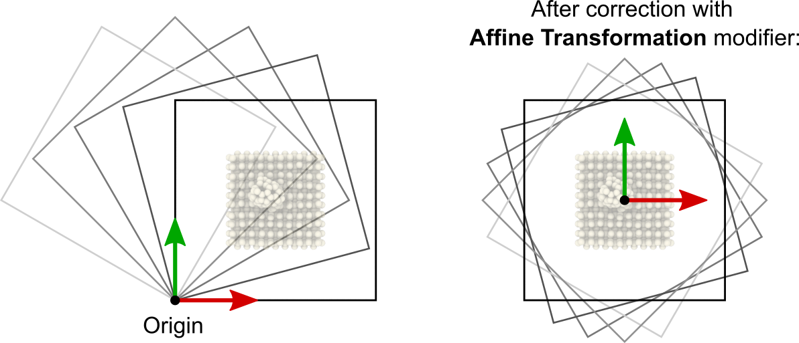
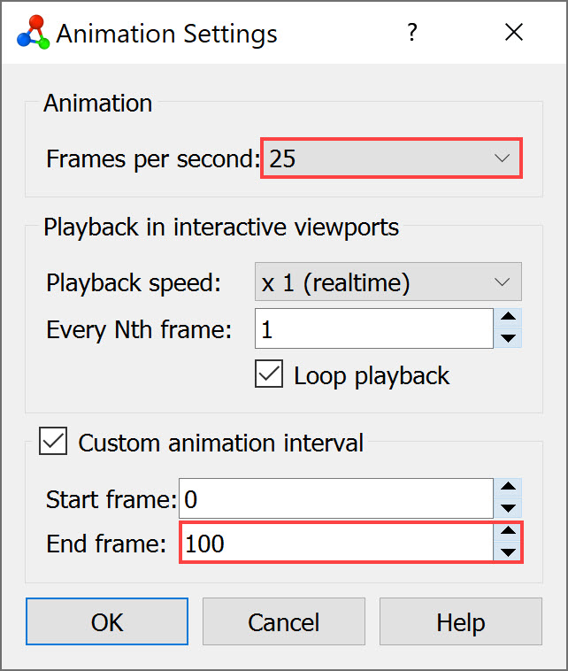
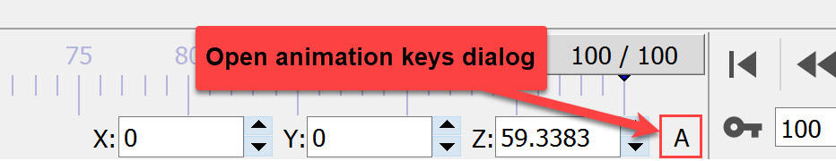
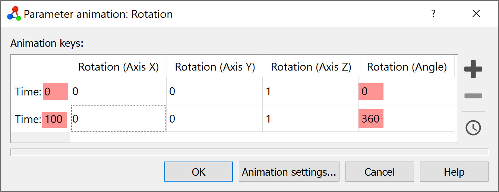

Turntable animation of a model

This step-by-step tutorial teaches you how to create an animated movie like the one on the right. It visualizes the simulated model from all sides, slowly rotating it by 360° around its center of mass.
Step 1: Load simulation file
Start by downloading the simulation file
C60_impact.nc
for this tutorial to your computer. The file contains a short MD trajectory of a C60 molecule striking a surface. Use the function
to open the file C60_impact.nc in OVITO.
Step 2: Extract a static snapshot
The loaded trajectory file contains 12 simulation frames, indicated in the timeline of OVITO. However, the aim of this tutorial is to create an animation in which the only camera is moving around a single, static snapshot of the simulation. Thus, we have to first isolate one particular frame from the loaded trajectory.
In the External file panel, press the Playback ratio Change… button to open the Configure Trajectory Playback dialog. Activate the option Extract a static frame and choose the simulation timestep for which you would like to create a turntable animation.
The timeline of OVITO no longer shows the original series of trajectory frames now - as if you had loaded a data file containing just a single simulation snapshot.
Step 3: Adjust center of rotation
OVITO animation capabilities only allow you to move the virtual camera on straight paths through the three-dimensional scene. Thus, revolving the camera in a circular orbit around an object requires a different approach. Instead of animating the camera itself, we are going to rotate the simulation model while keeping the camera fixed.
You can adjust the rotation of the whole model, relative to the global scene coordinate system, using the Rotate tool found in the main toolbar of OVITO. After activating this mode, three numeric input fields appear in the status bar at the bottom of the program window, which let you adjust the current Euler angles of the selected object, i.e. its rotation around the three axes of the global coordinate system. For a turntable animation, we will have to vary the third Euler angle (Z), which specifies the object’s rotation around the z-axis.
{kind=link}
{kind=link}
Numeric input fields for the Euler angles
{kind=link}
While playing with the value of the z-angle, you will notice, however, that the model is revolving around the wrong location in space. That’s because the Rotate tool always uses the object’s coordinate origin and not its center of mass as the pivot point. The simulation box in this example happens to be positioned such that its corner is at \((0,0,0)\), the origin of the simulation coordinate system (you can inspect the cell info here). Thus, in order to change the effective center of rotation, we’ll first have to translate the model to center it on the coordinate system origin. This can be accomplished by applying the Affine transformation modifier.
{kind=link}
Open the Add modification… drop-down list and select Affine transformation from the Modification section. The newly inserted modifier appears as a new item in the pipeline editor. Activate the option In reduced cell coordinates as shown in the screenshot and enter the values \((-0.5, -0.5, 0)\) into the fields for the translation vector. This shifts the simulation box including all atoms such that the pivot point \((0,0,0)\) is now located in the center.
Step 4: Set animation length
{kind=link}
Rendering an animation video in OVITO requires a finite timeline, i.e. an interval of animation frames. In step 2 above we extracted a single snapshot from the loaded trajectory, which means the current timeline is degenerate and consists of one static frame only. OVITO automatically hides the time slider and disables the playback controls in such a case.
Now you are going to override the length of the animation interval to explicitly define the duration of the turntable animation. Click in the animation toolbar to open the Animation settings dialog. Check Custom animation interval and enter the value 100 into the End frame field. This adjusts the animation interval to range from 0 to 100 (=101 video frames), which corresponds roughly to a video duration of 4 seconds when played back at 25 frames per second (FPS). The dialog provides a separate control for the FPS frame rate. When done, click Ok to close the dialog.
{kind=link}
Step 5: Create animation keys
Make sure the Rotate tool is still selected in the main toolbar. In the status bar at the bottom, click the little A button that is located right next to the input fields for the Euler angles.
{kind=link}
This opens the animation keys dialog window. OVITO’s parameter animation system is based on so-called keyframes, which means that the user specifies the value(s) of an animated parameter, for example the dataset’s orientation, at specific points along the timeline. In between these keyframes the program will automatically interpolate from one key value to the next to create a smooth transition.
For animating one complete rotation of the dataset, i.e. revolving once by 360 degrees around the z-axis, two animation keys are required: A first one at the start of the animation interval (frame 0) and a second one at the end of the interval (frame 100). The first key brings the object into its standard orientation (zero degrees), while the second key specifies a full 360° turn. Note that, visually, the start and end orientations are indistinguishable, but OVITO keeps track of how many revolutions an object has performed.
Use the + button in the animation keys dialog to create the second key at the end of the animation interval and make sure the values in the table match the ones shown in the screenshot:
{kind=link}
Note that the orientation of the dataset in three-dimensional space is specified in each keyframe by an axis of rotation (three vector components) and a signed rotation angle around that axis.
Further information
Like the object rotation in this tutorial, many other parameters can be animated as well in OVITO using the same keyframe-based mechanism; for example, the position and orientation of a Slice plane, the iso-level parameter of the Create isosurface modifier, or the transparency parameter of the Surface mesh visual element. Animatable parameters are recognizable by the small A button next to the parameter’s input field.
If you encounter any problems with this tutorial, please drop us an email at support@ovito.org to help us improve the instructions.